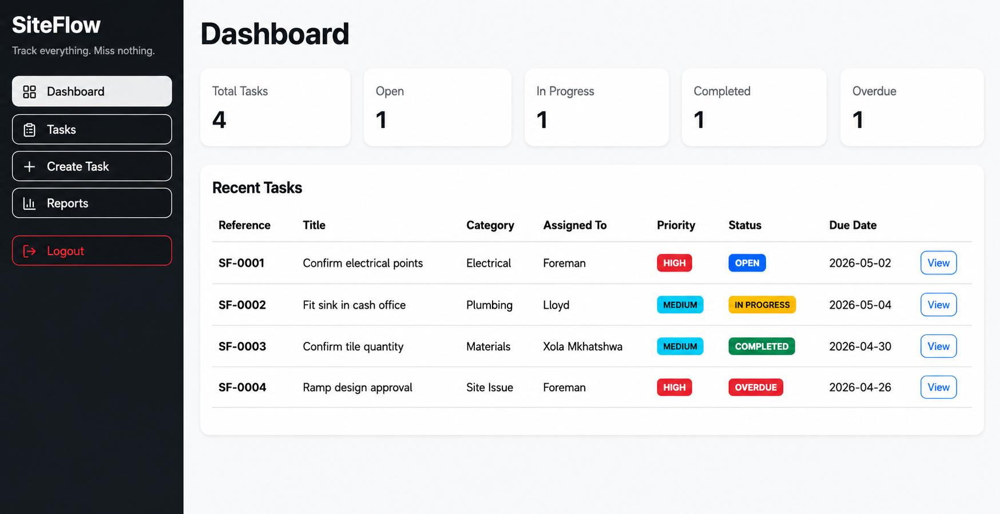
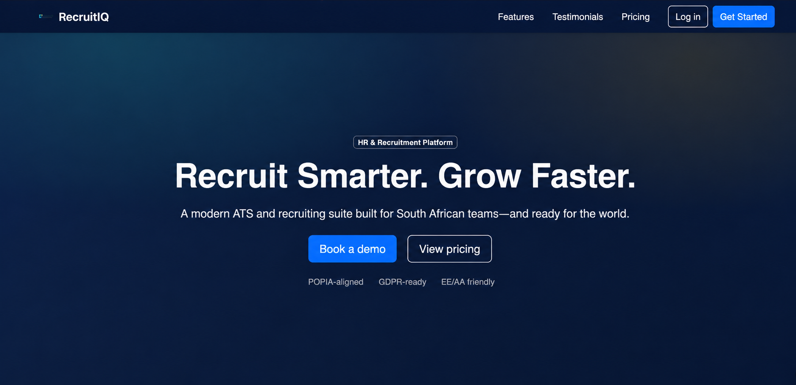
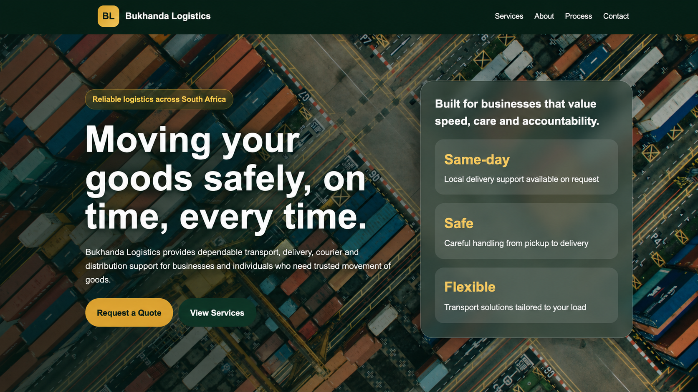

Full-Stack Web Development
Modern web applications using React, TypeScript, Java, Spring Boot, REST APIs, and SQL databases.
Software engineer based in South Africa
Hi, I'm Xola Mkhatshwa.
I build web applications, backend APIs, dashboards, and business tools that improve visibility, reduce manual work, and help teams operate more efficiently.
About Me
I am a South African software engineer with experience building enterprise backend systems, APIs, frontend applications, dashboards, and business-focused digital tools.
My work sits at the intersection of software engineering and business problem-solving. I enjoy taking unclear, manual, or inefficient processes and turning them into structured digital solutions that are easier to manage, track, and improve.
Outside of professional engineering work, I am also involved in business and entrepreneurship. That gives me a practical view of where businesses struggle and how technology can improve visibility, accountability, and growth.
What I Do
Modern web applications using React, TypeScript, Java, Spring Boot, REST APIs, and SQL databases.
Reliable backend services, data models, validations, integrations, and production-ready API improvements.
Structured systems that replace scattered WhatsApp follow-ups, spreadsheets, and manual tracking.
Reporting views that help users track activity, monitor progress, and make clearer decisions.
Professional websites for individuals and businesses that need to present their value clearly and generate enquiries.
Skills
Projects

Business Workflow & Follow-up Management System
A workflow management system that helps small businesses track tasks, customer follow-ups, responsibilities, and progress in one place.
Helps businesses reduce forgotten follow-ups and improve accountability.

Recruitment & Applicant Tracking Platform
A recruitment platform for receiving, managing, and tracking job applications in a structured way.
Backend API & Performance Optimisation
Backend improvements for an enterprise case management system, including API development, schema changes, validation, and production-readiness.
Screenshots and implementation details withheld due to confidentiality.
Auditability & Search Improvement
An enhancement for tracking, auditing, and searching case information with stronger traceability and reporting support.
Screenshots and implementation details withheld due to confidentiality.

One-Page Business Website
A responsive one-page website for a logistics business, designed to present services clearly and receive customer enquiries.
Work With Me
I can help individuals, startups, and small businesses with websites, landing pages, web applications, admin dashboards, workflow systems, backend APIs, business process digitisation, and system improvements.
Whether you need a simple website, an internal business tool, or a custom application, I focus on building solutions that are practical, clear, and aligned with real business needs.
Book A Consultation
Prefer a quick call? Book a consultation and share what you want to build, improve, or digitise.
{kind=link}
{kind=link}
{kind=link}